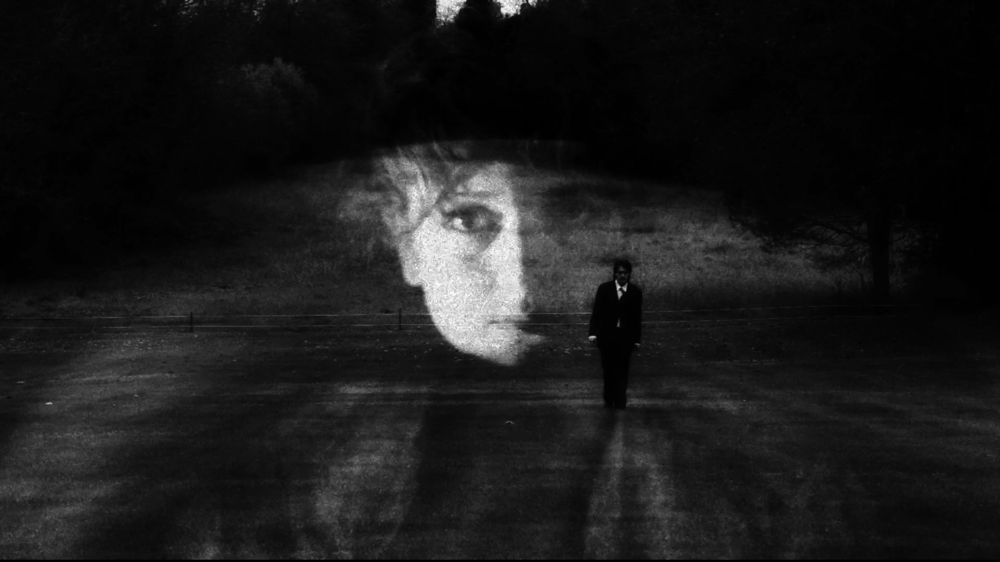
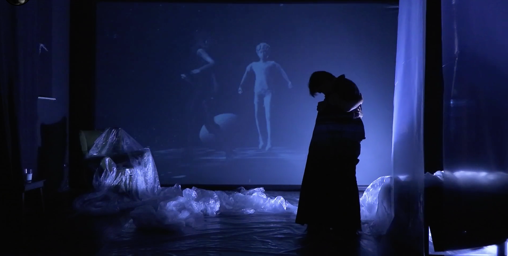

Al via la 6ª edizione della Settimana delle Residenze Digitali
Intervista a Boris Pimenov sul progetto Eburnea, vincitore del bando Residenze Digitali 2025
La sesta edizione della Settimana delle Residenze Digitali ha preso il via con una serie di progetti che esplorano le intersezioni tra performance, tecnologia e intelligenza artificiale. Tra questi spicca Eburnea, performance interattiva multimediale di Boris Pimenov, selezionata tra i vincitori del bando Residenze Digitali 2025.
Il progetto di Pimenov indaga la memoria attraverso l’integrazione tra corpo performativo, spazio digitale e interazione in tempo reale di un pubblico remoto. Utilizzando TouchDesigner come nucleo creativo, l’artista costruisce ambienti virtuali renderizzati in tempo reale che rispondono ai input del performer e del pubblico.
Durante la settimana di residenza, Pimenov ha sviluppato ulteriormente la componente di intelligenza artificiale del progetto, integrando modelli generativi per la trasformazione in tempo reale di contenuti visivi e testuali. Questa sinergia tra algoritmi, spazi digitali e azione scenica dal vivo posiziona Eburnea all’avanguardia della ricerca sul teatro immersivo.
Di seguito, i principali articoli e interviste pubblicati in occasione della presentazione del progetto:
Rassegna stampa
Pane Acqua Culture
“Al via la 6a edizione della Settimana delle Residenze Digitali: intervista a Boris Pimenov di Eburnea”
Leggi l’articolo →Residenze Digitali
Pagina ufficiale dell’edizione 2025 con tutti i progetti selezionati
Visita il sito →Teatro e Critica
“Arrivano le Residenze Digitali: chi ha paura della tecnologia?”
Leggi l’articolo →Ateatro
“Racconti dalla Settimana delle Residenze Digitali: Alice nel paese dell’AI”
Leggi l’articolo →Galleria



Documentazione fotografica della performance Eburnea durante la Settimana delle Residenze Digitali 2025
L’interesse per Eburnea ha dimostrato come la ricerca artistica nell’ambito delle tecnologie digitali stia assumendo un ruolo sempre più centrale nel panorama teatrale contemporaneo. La capacità di Pimenov di fondere una solida formazione teatrale con competenze tecniche avanzate rappresenta un esempio significativo di come l’arte performativa possa evolversi nell’era digitale.
Il progetto continuerà il suo percorso con ulteriori sviluppi e presentazioni internazionali nel corso del 2026, confermando l’attenzione crescente per le pratiche artistiche che esplorano le potenzialità espressive delle nuove tecnologie.